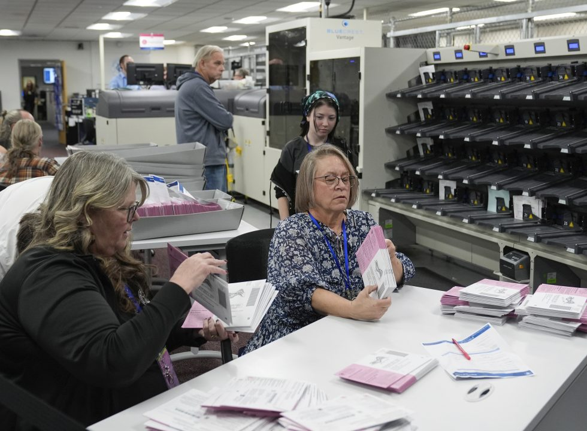
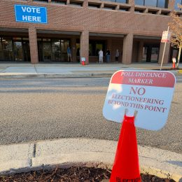

Fifty-five percent of registered Democrats express confidence in the accuracy of the vote count for the upcoming midterms, compared with 38% of Republican voters. Most voters view AI-generated misinformation, partisan gerrymandering, foreign government influence, and presidential interference as major problems in U.S. elections.
This study from The Media Insight Project, a collaboration between the American Press Institute and The AP-NORC Center, explores disconnects, and common ground, between the public and journalists about the media’s priorities and practices.
Government and International Affairs
Fifty-six percent of the public has little or no trust in Trump’s judgment regarding the use of military force overseas. Still, 80% continue to be at least moderately concerned about the direct threat of Iran’s nuclear program to…
When it comes to allegations that he has profited from the presidency, 41% believe President Trump has done something illegal and 18% think his actions…
Eight in 10 think the U.S. government should prioritize protecting U.S. workers and keeping AI under human control.
Sixty-eight percent of voters think President Trump is too extreme. Just over half say the Republican party is too extreme while just under half say…

The AP-NORC Poll Tracker charts how Americans' views change over time. If the live chart does not load, explore the AP-NORC polling trends.